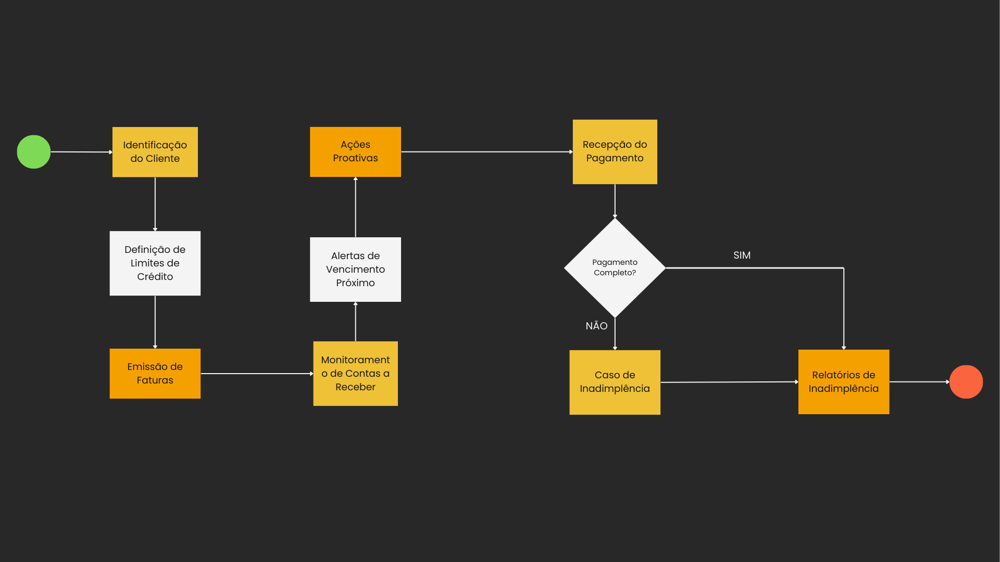

Transformação do Departamento Financeiro em Empresa de Construção Civil
Integrantes

Danilo de Oliveira
 20.30.40_e2b9de8a.jpg)
Fernanda Rodrigues Cassimiro
Introdução
- Contexto da Empresa: Breve descrição da empresa, setor de atuação, e a atual dependência de sistemas isolados e planilhas.
- Necessidade de Mudança: Destacar a necessidade de integrar processos financeiros para maior eficiência e redução de erros.
Problemas Identificados
- Inadimplência: Discussão sobre o alto índice de inadimplência e seu impacto no fluxo de caixa.
- Multas e Juros: Problemas causados pelo pagamento recorrente de multas e juros por atraso.
- Fluxo de Caixa: Desafios enfrentados devido a um fluxo de caixa ineficiente.
- Cobranças Indevidas: Questões relacionadas a erros nas cobranças e disputas com clientes.
Objetivos da Implementação
- Objetivo Geral: Integrar e otimizar os processos financeiros através do SAP B1.
- Objetivos Específicos: Detalhar os objetivos de redução de inadimplência, eliminação de multas, melhoria no fluxo de caixa, e precisão nas cobranças.
Metodologia
- Análise dos Sistemas Atuais: Como os dados foram coletados e analisados para identificar as falhas.
- Planejamento da Implementação: Abordagem e etapas planejadas para a implementação do SAP B1.
Solução Proposta - Gestão de Inadimplência
- Estratégias de Crédito: Como o SAP B1 ajudará a estabelecer limites de crédito e gerenciar riscos.
- Alertas de Vencimento: Uso de funcionalidades do SAP para melhorar o monitoramento e a cobrança de contas a receber.

Solução Proposta - Controle de Pagamentos
- Automatização de Pagamentos: Como o SAP B1 facilitará a automação dos processos de pagamento para prevenir atrasos e multas.
- Integração Bancária: Benefícios da integração bancária para agilizar os pagamentos.
Solução Proposta - Fluxo de Caixa
- Gestão de Caixa: Funcionalidades do SAP B1 para prever e gerenciar o fluxo de caixa de maneira mais eficaz.
- Dashboard: Uma análise em tempo real do estado do fluxo de caixa
Solução Proposta - Gerenciamento de Cobranças
- Reconciliação de Contratos: Como o sistema ajudará a garantir a precisão das cobranças e reduzirá conflitos com clientes.
- Interface do Cliente: Melhorias na interface para facilitar pagamentos e consultas por parte dos clientes.
Addons e Integrações - BankPlus
- Automatização e Conformidade: Discutir como o addon BankPlus aprimorará ainda mais os processos de pagamentos e reconciliação bancária.
 Site BankPlus
Site BankPlus
Avaliação de Impacto e KPIs
- Impacto Esperado: Benefícios diretos da implementação em termos quantitativos e qualitativos
- KPIs: Indicadores-chave que serão usados para medir o sucesso da implementação.
Conclusão
- Resumo: Recapitulação dos principais pontos e benefícios da implementação do SAP B1.
- Visão Futura: Como a implementação contribuirá para o crescimento e a estabilidade financeira a longo prazo.
 Alfa
Alfa